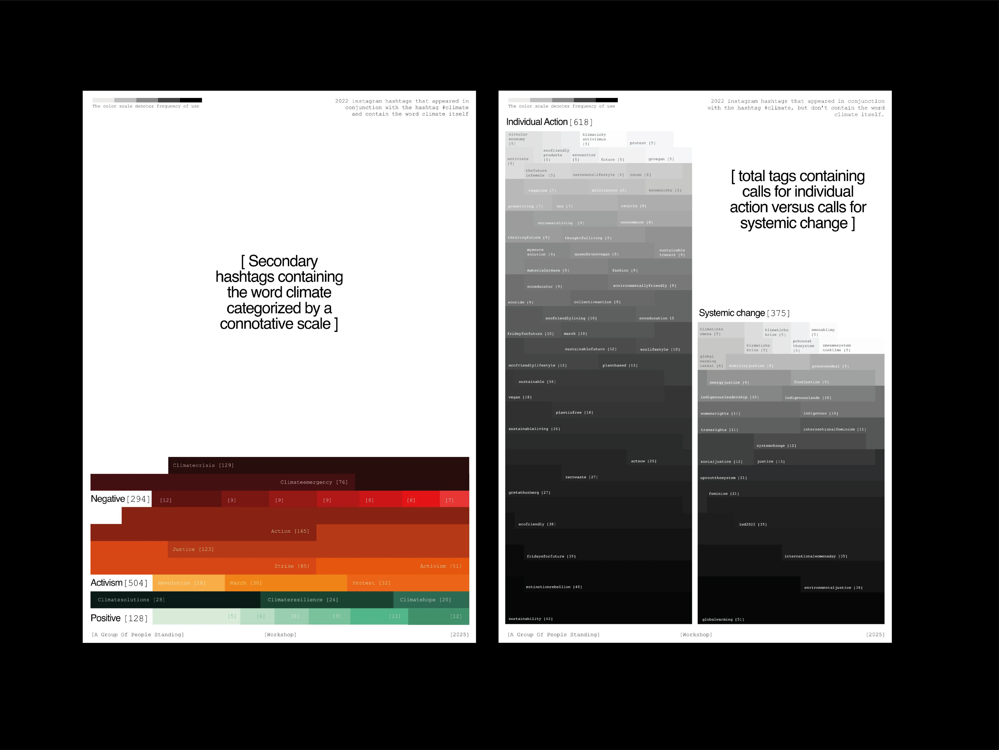
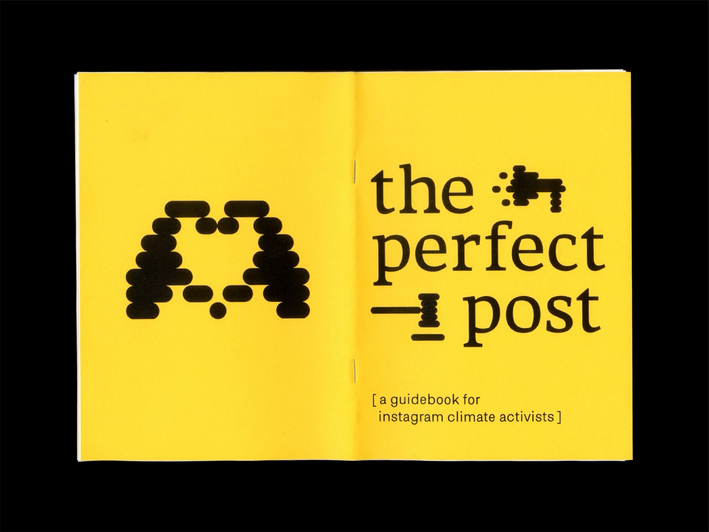
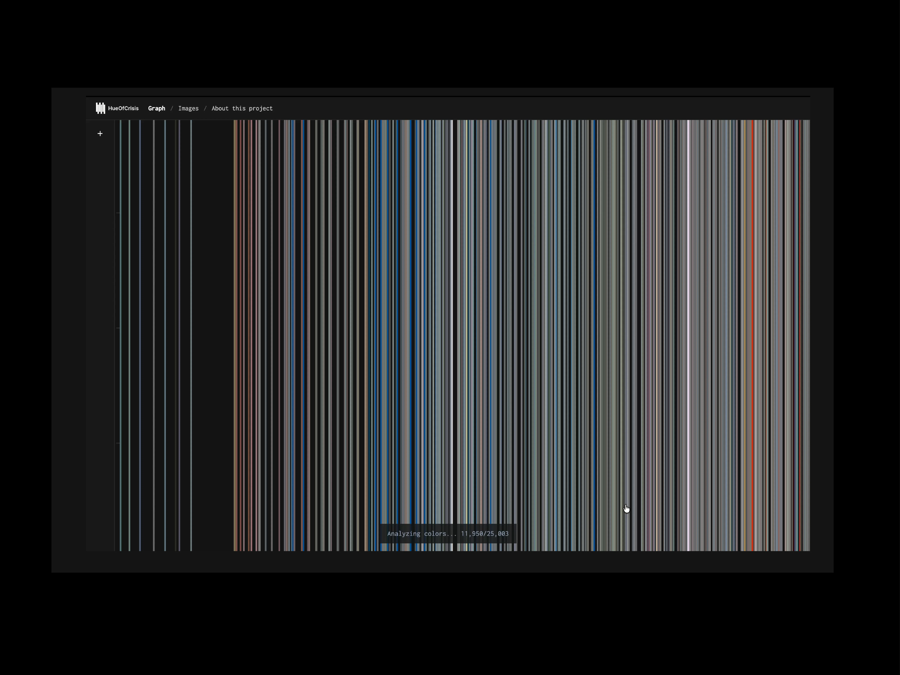
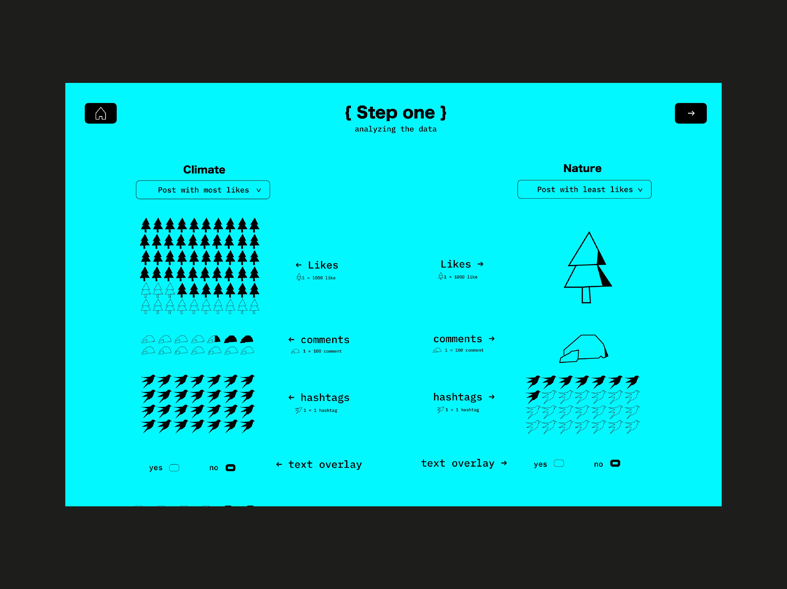

A Group of People Standing
Workshop: Contesting Algorithmic Vision
November/December 2025
A Group of People Standing explores how Instagram’s AI-generated alt-text classifies images, often flattening cultural, political, and emotional meaning into neutral machine-readable descriptions. The workshop connects research and communication design to question how algorithmic image interpretation shapes visibility, climate narratives, and our understanding of reality.
Workshop Results
These projects explore how climate discourse is shaped by both human communication and algorithmic systems. From hashtags and posting strategies to large-scale image analysis, they reveal how platforms classify, filter, and frame climate content. Together, the works expose the invisible mechanisms behind digital visibility and offer a critical perspective on how climate narratives are constructed today.



